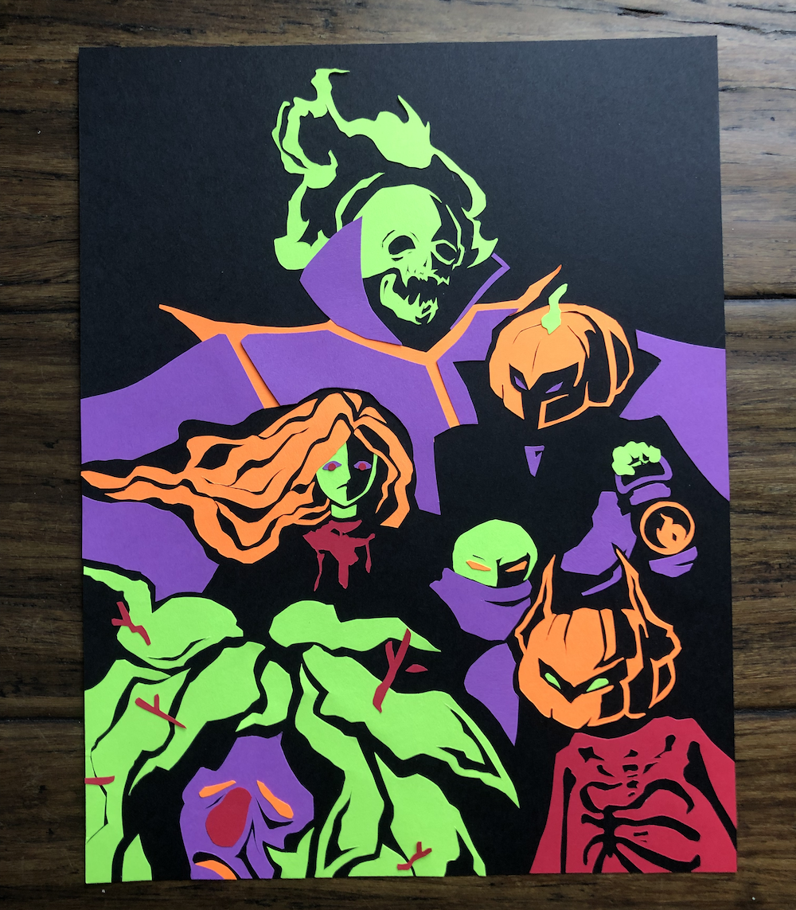

haunted cemetary
I crafted this project for a 2021 Realm of the Mad God Halloween craft contest. Similar to the 2020 contest I entered, I went with a paper craft. However, unlike the past project, this one was less 3D. There are multiple layers of paper, but no more than 2 layers on top of each other. Rather, I approached this project as more of a cut-out image. My subjects here are the bosses of the dungeon the Haunted Cemetary. This project placed 5th of 10.
I first drafted the project in Photoshop, to get a sense of the layout and colors I may use. I thought that using a Halloween-like palette would be an interesting but thematic challenge to work with, and give the project a bold simplicity. So in some sense, this project was both relatively simple and somewhat complex. The limited color palette was a bit of a constraint, as the bosses displayed do not all have exactly corresponding colors. I decided to match the colors similar, then fill in the rest in a way that would spread them out more evenly (eg. the Ghost Bride's face is not green, but I decided on green since there wasn't much green around otherwise). Playing with the negative space and using the black background as shadows/black material was an interesting component as well. Overall, I think that while this might not be the flashiest paper project I've made, I think it is well thought out and executed fairly cleanly.
Colored cardstock; October 2021